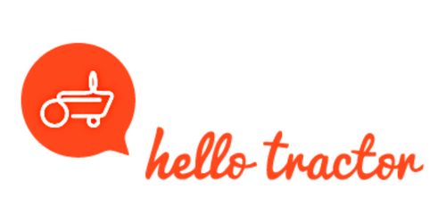

Egerton University
Egerton University supports CIWAB through academic leadership, research collaboration, and institutional capacity building. Its technical expertise spans water management, environmental science, agriculture, and community development.
The university strengthens CIWAB’s mandate through innovation, student engagement, data collection, and scientific research support.
WWF Kenya
WWF provides environmental conservation expertise, supports watershed protection, and helps integrate biodiversity and climate resilience into CIWAB activities.
Their involvement promotes sustainable practices balancing ecological integrity and community water needs.

Water Resources Authority
WRA guides CIWAB on regulatory compliance, catchment management strategies, and water resource monitoring in alignment with national water laws.
Their oversight ensures sustainable and equitable water resource use across the region.

VEI – Dutch Water Operators
VEI offers technical assistance, utility training, and operational best practices for sustainable water service delivery and governance strengthening.
Their support enhances CIWAB’s capacity to build resilient water management systems.

Hello Tractor
Hello Tractor supports mechanized farming, smart tools, and digital tractor services that improve agricultural productivity and irrigation efficiency.
Their involvement helps ensure water–agriculture linkages remain economically accessible for smallholder farmers.
World Waternet
World Waternet provides integrated water management expertise, technical advisory support, and global best practices for water quality and wastewater improvement.
Their international experience strengthens CIWAB’s long-term sustainability and climate-resilient water systems.